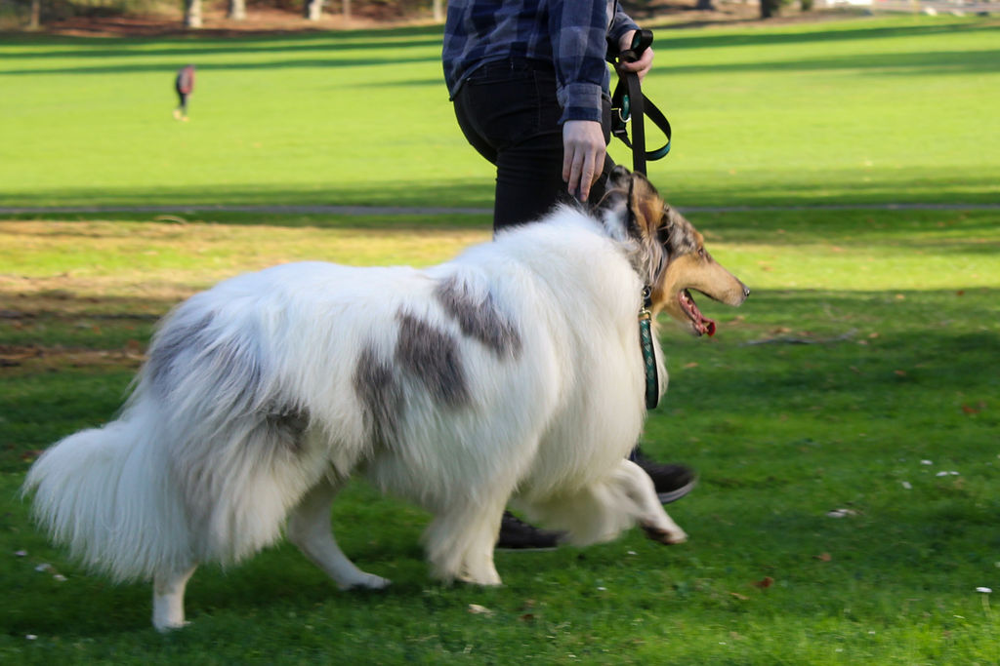

Philosophy + Mission Statement of Communications Dog Training
The vast majority of behavior issues in pet dogs are a result of poor communication. Sometimes it's unclear expectations, sometimes it's a mis-match in personality types. Most of the time, it's a language barrier. What do you want to say to your dog? What are they trying to say to you? Are you using your voice and your body to talk to your dog - or only your voice? If your dog is reactive, are you looking at what your dog is doing prior to their reaction? How do you know if your dog is anxious, frustrated, or protective?
In today's world, it can be very easy to miss the subtleties in how our dogs talk to us. How to tell if your dog is overstimulated or understimulated, if they're under-socialized, socially frustrated, or genetically anxious. As dog owners, we want our dogs to feel fulfilled, satisfied, and comfortable, and as our world becomes busier it becomes harder to reach that sense of cozy companionship.
As someone who believes very strongly in effective communciation, improving animal husbandry, and increasing the quality of life in both humans and our pets - my goal at Communications Dog Training is to help you and your dog live a full, relaxed, comfortable life. Breaking down those subtleties in your dog's body language, and teaching you how to use your own body language to talk to your dog, I will help you and your dog listen to each other to achieve all of your goals and more.